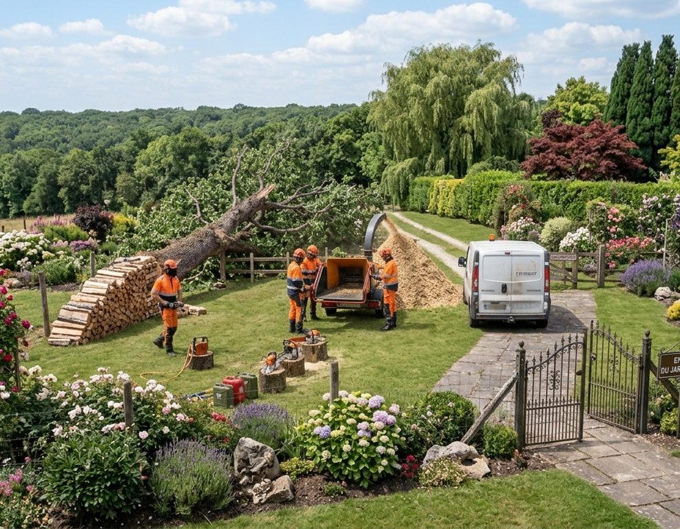
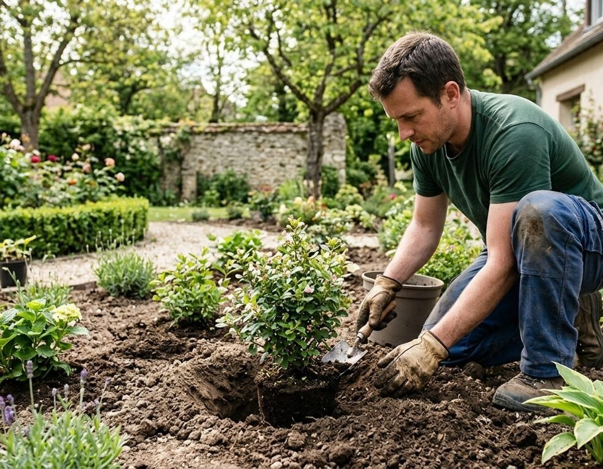
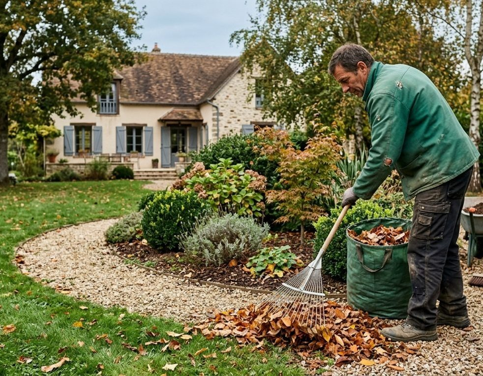

Paysagiste à Gazeran (78)
Jardins créés et entretenus à Gazeran
Manger Jardin aménage et entretient vos jardins à Gazeran et aux alentours.
- Création de jardins
- Plantations
- Engazonnement
- Entretien

78Yvelines
Nos prestations
Quatre domaines pour votre jardin
Du projet de jardin à son entretien régulier.

Création de jardins
Massifs, pelouses et allées : l'aménagement se pense selon votre terrain.
En savoir plus →
Plantations
Arbustes, haies et vivaces plantés dans les massifs.
En savoir plus →
Engazonnement
Préparation du sol, puis semis ou pose de gazon.
En savoir plus →
Entretien
Tonte, taille de haies et suivi des massifs.
En savoir plus →À propos
Un paysagiste installé à Gazeran
Manger Jardin est une entreprise d'aménagement paysager installée à Gazeran, dans les Yvelines.
Contactez-nous pour parler de votre jardin et demander un devis.
Cyrille Robert, dirigeant

Contact
Un projet de jardin ? Parlons-en.
Appelez-nous pour décrire votre projet et demander un devis.
06 08 56 61 52